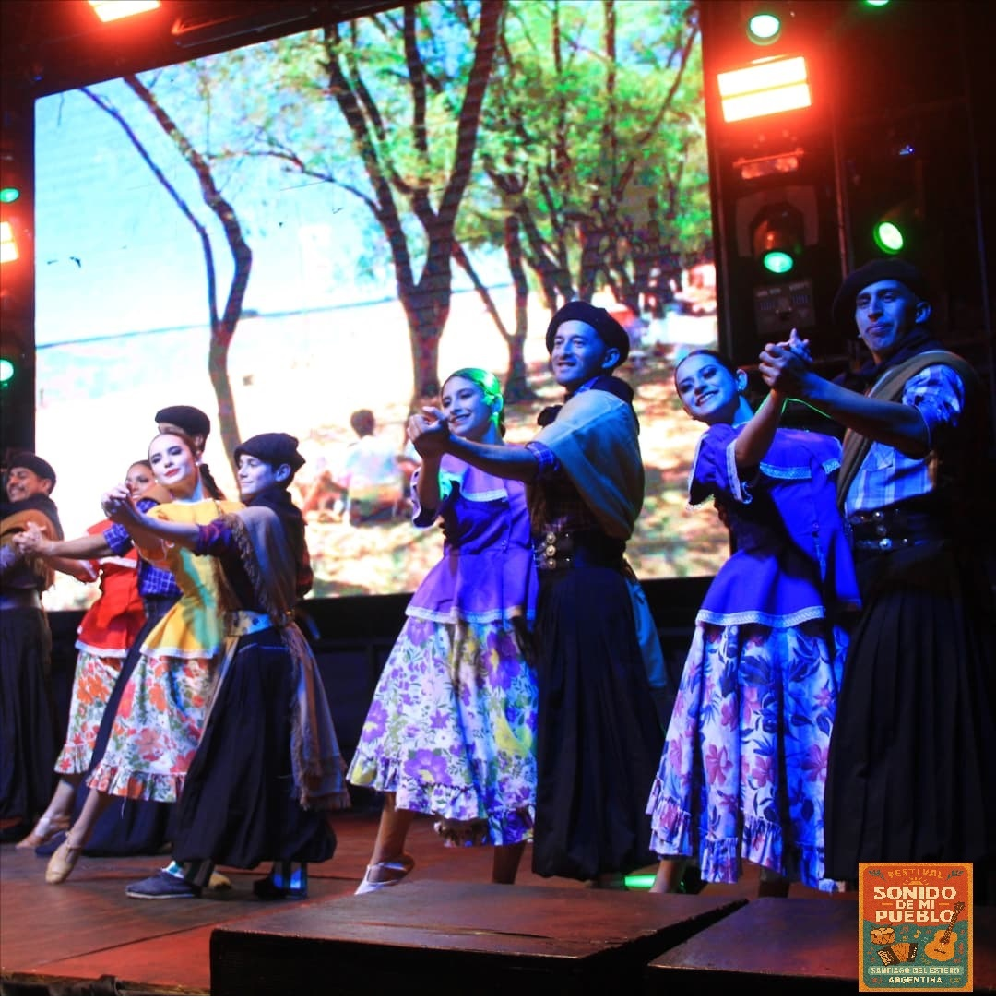
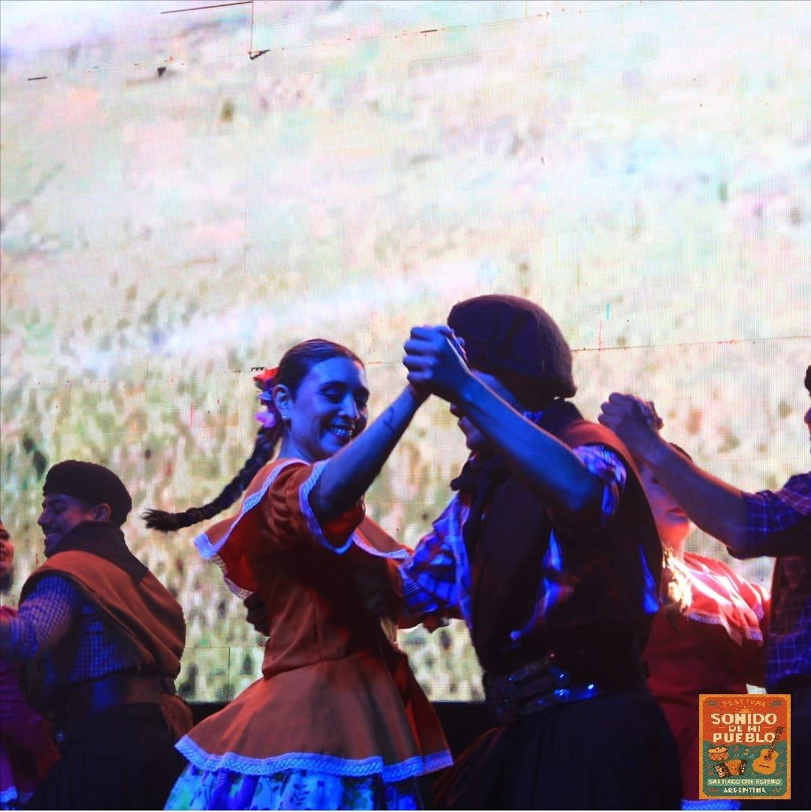
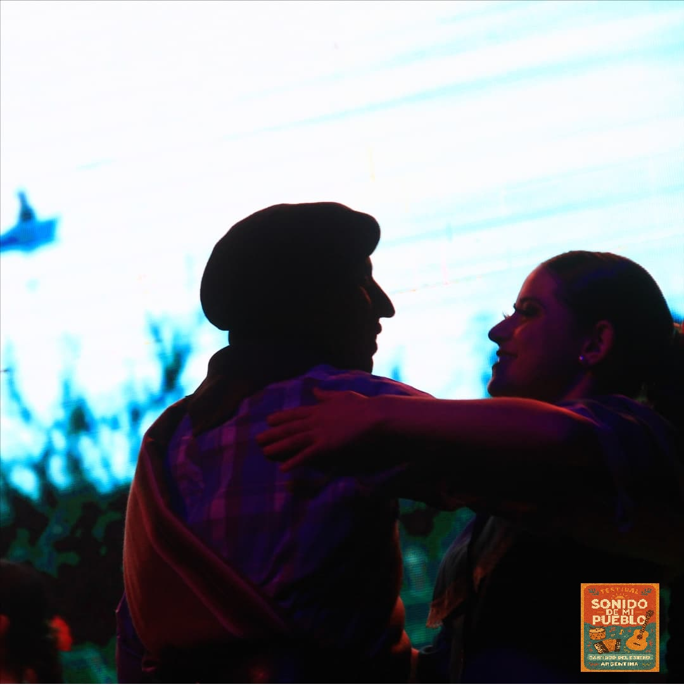

Un encuentro vibrante que celebra la riqueza del folklore argentino, uniendo a talentosos artistas populares de todo el país. En esta fiesta de la tradición, la música, la danza y las historias de nuestra tierra se entrelazan para honrar nuestras raíces y compartir la pasión por nuestra cultura Santiagueña.
¡Te esperamos para vivir juntos la magia de Sonidos de Mi Ciudad!
📸 Galería del Festival




Únete a nosotros en un evento único que celebrará la cultura folklórica argentina en la Madre de Ciudades.

Únete a nosotros en un evento único que celebrará la cultura folklórica argentina en la Madre de Ciudades.
📅 Fechas: 16, 17 y 18 de Mayo 2025
📍 Lugar: PLAZA AÑORANZAS
🎤 Artistas principales:
- 🎵 DUO COPLANACU
- 🎵 LOS MANSEROS SANTIAGUEÑOS
- 🎵 ABEL PINTOS